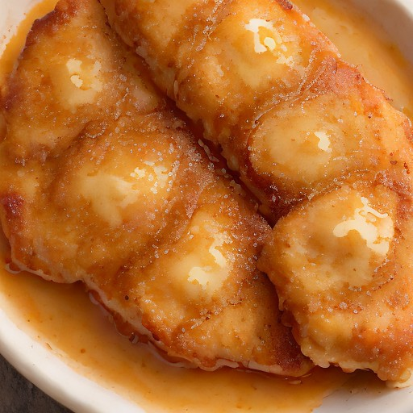

サイド
極厚カツ × 特製ハニーマスタード：悪魔の甘辛カリッカリグラタン

極厚カツに、特製ハニーマスタードの甘辛ソースを絡めて焼き上げる、カリッカリとした食感と、悪魔的な旨味と甘みが融合したグラタン！
💡 こんな時・こんな人におすすめ！
パーティーやBBQに、ビールが進む一品
📋 必要な材料（ポストイット風）
材料リスト 1
- 極厚カツ適量
- 特製ハニーマスタード適量
- 小麦粉適量
材料リスト 2
- 水適量
- 卵適量
- 油適量
🍳 作り方ステップ
1
極厚カツを小麦粉と水で薄く伸ばし、卵でコーティング。
2
フライパンで油を熱し、極厚カツを両面こんがりと焼きます。
3
特製ハニーマスタードを混ぜ合わせたソースを、焼いた極厚カツに塗ります。
4
仕上げに、カリッカリとした食感を楽しめるように、お好みでハニーマスタードソースを散りばめれば完成。